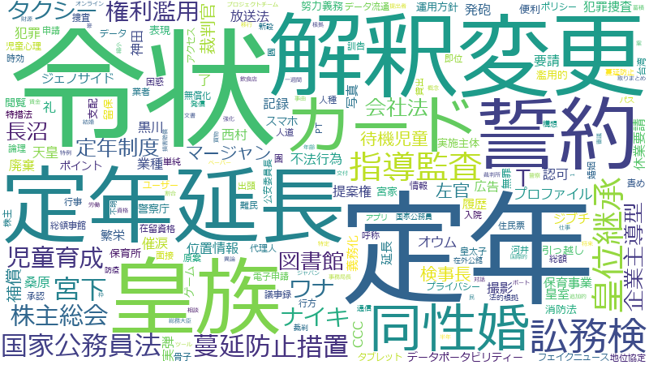

山尾志桜里

定年、カード、令状、定年延長、解釈変更、誓約、同性婚、皇族、要請、情報、タクシー、国家公務員法、補償、記録、延長、業種、データ、ポイント、宮下、株主総会、申請、訟務検、会社法、図書館、廃棄、待機児童、指導監査、犯罪、皇位継承、表現、裁判官、西村、認可、T、企業主導型、児童育成、写真、義務化、蔓延防止措置、マージャン、広告、検事長、業者、権利濫用、特定、スマホ、休業要請、位置情報、努力義務、単純、天皇、定年制度、将来、履歴、強化、承認、撮影、放送法、発信、相談、総額、警察庁、アクセス、ゲーム、プライバシー、ユーザー、仕事、便利、保育所、入院、割合、台湾、実施主体、審議、年間、支配、文書、無償化、特措法、繁栄、行事、閲覧、黒川、オンライン、タブレット、ナイキ、リスク、不明、不法行為、了、保育事業、利用、国家公務員、国際的、圏、専門家、左官、引っ越し、捜査、新設
令状、定年、解釈変更、定年延長、皇族、誓約、カード、同性婚、訟務検、皇位継承、指導監査、国家公務員法、宮下、蔓延防止措置、児童育成、株主総会、権利濫用、タクシー、T、ナイキ、ワナ、図書館、企業主導型、定年制度、会社法、長沼、マージャン、左官、裁判官、待機児童、補償、検事長、プロファイル、業種、CCC、催涙、位置情報、天皇、記録、発砲、桑原、廃棄、認可、放送法、西村、オウム、提案権、犯罪、実弾、撮影、要請、了、神田、礼、黒川、休業要請、不法行為、ジェノサイド、保育事業、繁栄、皇室、履歴、犯罪捜査、延長、広告、写真、義務化、ジブチ、データポータビリティー、表現、ポイント、ゲーム、スマホ、引っ越し、宮家、消防法、留保、無罪、実施主体、運用方針、努力義務、閲覧、支配、便利、警察庁、保育所、濫用的、フェイクニュース、困惑、行事、情報、タブレット、出頭、台湾、骨子、皇太子、データ流通、総領事館、河井、行方